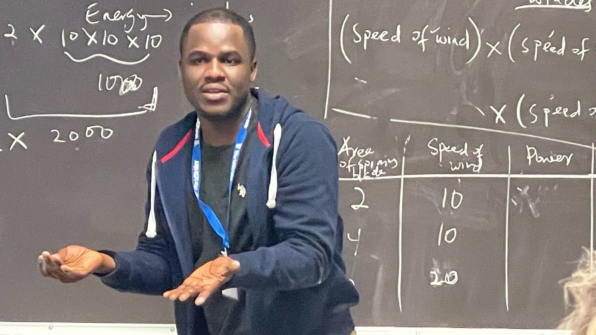
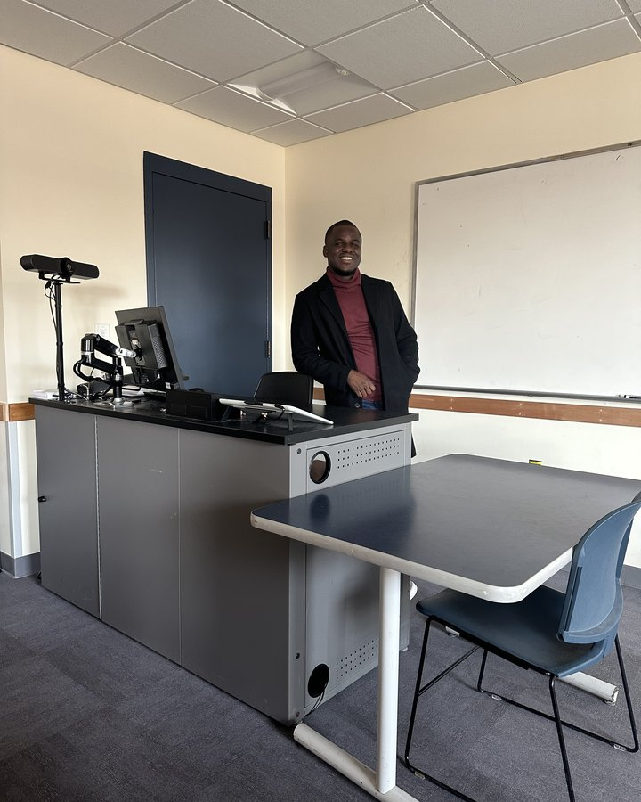

Teaching is central to who I am. Across more than five years and three countries, I have taught mathematics to classes of 45–51 students — from algebra through calculus — and mentored K–12 scholars. I care about making abstract ideas concrete, building inclusive classrooms, and helping every student find the why behind the mathematics.

University
University Teaching
I am an Instructor of Mathematics at the University of Vermont (2022–present), in the Department of Mathematics & Statistics, where I design and deliver standards-aligned instruction to sections of 45–51 undergraduates. You can also find me on the department’s graduate students page.
Courses taught at UVM
“The best prof I had this semester — so understanding and caring; he set me up for success.”
“Always willing to answer questions and explain things a second time; lots of practice problems in class.”Read student reviews
Earlier university teaching
- 2020 – 2022
Instructor — Cape Coast Technical University, Ghana
Computer Literacy (60 students) & Digital Literacy (45 students); hands-on, application-driven instruction. - 2019 – 2020
Instructor & Research Assistant — University of Ghana
Computational Mathematics instruction and grading; mathematical-biology research under US Fulbright Scholar Prof. Daniel Bentil. - 2015 – 2019
Teaching Assistant — University of Education, Winneba, Ghana
Instruction, grading, and academic support for undergraduate mathematics.
K–12 & Outreach
K–12 Teaching & Outreach
Advisor & Scholar Support Educator — Envision by WorldStrides
- Delivered 8 hours of daily curriculum to groups of diverse K–12 scholars in a program serving 300+ participants.
- Adapted instruction to multiple learning styles and ability levels, keeping mixed-age groups engaged across full-day sessions.
- Mentored and role-modeled for 300+ students, supporting curiosity and social-emotional development.
I also bring outreach into my graduate community — supporting mathematics enrichment and helping students see mathematics as approachable and human.

In the classroom
A Lecture in Motion
A glimpse of a live lecture — working a problem through, step by step, at the board.
Growth
Teaching Tools & Development
I teach with Brightspace (LMS), Desmos, and GeoGebra, and use data from formative assessments to adapt instruction. Professional development includes the Instructional Strategies Course & Standards of Operational Excellence (IACET, 2023) and the Google Data Analytics certificate. In 2024–2025 I received the Nam Sang Kil Award for Outstanding Student in Mathematics at the University of Vermont.